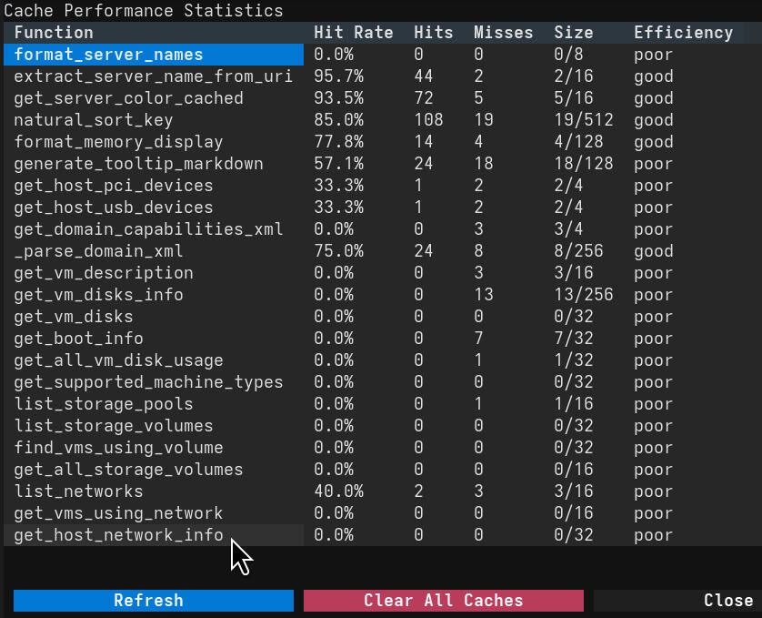

Debugging and Internal Statistics¶
VirtUI Manager provides built-in tools to help users debug issues and monitor the application's internal performance, including lru_cache usage and libvirt API call statistics.
Accessing Debug Information¶
You can access debug information and internal statistics directly from within the VirtUI Manager application using keyboard shortcuts:
Ctrl+l: Toggles Statistics Logging. When enabled, logs detailed performance statistics including libvirt API calls and cache performance every 10 seconds to the application log file.Ctrl+s: Opens the Cache Statistics modal. This modal provides detailed insights into thelru_cachehit rates and usage patterns for various internal functions, as well as a summary oflibvirtAPI calls.v: Opens the Log Viewer modal to view recent application logs and debugging information.
Statistics Logging¶
The Statistics Logging feature (Ctrl+l) provides continuous monitoring of application performance. When enabled, it logs detailed statistics every 10 seconds including:
- Cache Performance: Hit rates and usage patterns for all cached functions
- Libvirt API Calls: Detailed breakdown of all libvirt method calls by server
- Performance Trends: Shows percentage changes in call volumes to identify performance issues
This feature is particularly useful for:
- Identifying performance bottlenecks
- Monitoring libvirt API usage patterns
- Debugging connection issues
- Optimizing cache configurations
Note: Statistics logging writes to the application log file, not the console. Use the Log Viewer (v) to see the output.
Cache Monitoring¶
The Cache Statistics modal (Ctrl+S) presents a breakdown of how effectively the application's caching mechanisms are working. High hit rates indicate efficient data retrieval, while low hit rates might suggest areas for optimization.

Here's an example of the cache statistics output in the log:
INFO - Cache monitoring enabled.
INFO - === Cache Statistics ===
INFO - format_server_names: 0.0% hit rate (0 hits, 0 misses, 0/8 entries)
INFO - extract_server_name_from_uri: 95.7% hit rate (44 hits, 2 misses, 2/16 entries)
INFO - get_server_color_cached: 93.5% hit rate (72 hits, 5 misses, 5/16 entries)
INFO - natural_sort_key: 85.0% hit rate (108 hits, 19 misses, 19/512 entries)
INFO - format_memory_display: 77.8% hit rate (14 hits, 4 misses, 4/128 entries)
INFO - generate_tooltip_markdown: 57.1% hit rate (24 hits, 18 misses, 18/128 entries)
INFO - get_host_pci_devices: 33.3% hit rate (1 hits, 2 misses, 2/4 entries)
INFO - get_host_usb_devices: 33.3% hit rate (1 hits, 2 misses, 2/4 entries)
INFO - get_domain_capabilities_xml: 0.0% hit rate (0 hits, 3 misses, 3/4 entries)
INFO - _parse_domain_xml: 75.0% hit rate (24 hits, 8 misses, 8/256 entries)
INFO - get_vm_description: 0.0% hit rate (0 hits, 3 misses, 3/16 entries)
INFO - get_vm_disks_info: 0.0% hit rate (0 hits, 13 misses, 13/256 entries)
INFO - get_vm_disks: 0.0% hit rate (0 hits, 0 misses, 0/32 entries)
INFO - get_boot_info: 0.0% hit rate (0 hits, 7 misses, 7/32 entries)
INFO - get_all_vm_disk_usage: 0.0% hit rate (0 hits, 1 misses, 1/32 entries)
INFO - get_supported_machine_types: 0.0% hit rate (0 hits, 0 misses, 0/32 entries)
INFO - list_storage_pools: 0.0% hit rate (0 hits, 1 misses, 1/16 entries)
INFO - list_storage_volumes: 0.0% hit rate (0 hits, 0 misses, 0/32 entries)
INFO - find_vms_using_volume: 0.0% hit rate (0 hits, 0 misses, 0/32 entries)
INFO - get_all_storage_volumes: 0.0% hit rate (0 hits, 0 misses, 0/16 entries)
INFO - list_networks: 40.0% hit rate (2 hits, 3 misses, 3/16 entries)
INFO - get_vms_using_network: 0.0% hit rate (0 hits, 0 misses, 0/16 entries)
INFO - get_host_network_info: 0.0% hit rate (0 hits, 0 misses, 0/32 entries)
Libvirt Call Statistics¶
This section, also available through Ctrl+S, details the number of calls made to various libvirt API functions, broken down by connection (server). This is invaluable for understanding the application's interaction with libvirt and identifying potential API hotspots.
Here's an example of the libvirt call statistics output:
INFO - === Libvirt Call Statistics ===
INFO - ryzen7 (qemu+ssh://root @10.0.1.78/system): 2060 calls | +22 (100.0%)
INFO - - name: 748 calls (+10)
INFO - - connect: 379 calls (+3)
INFO - - blockStats: 188 calls (+2)
INFO - - info: 126 calls (+1)
INFO - - state: 104 calls (+1)
INFO - - getCPUStats: 94 calls (+1)
INFO - - memoryStats: 94 calls (+1)
INFO - - interfaceStats: 94 calls (+1)
INFO - - interfaceAddresses: 94 calls (+1)
INFO - - getURI: 40 calls (+0)
INFO - - XMLDesc: 36 calls (+0)
INFO - - listAllDomains: 32 calls (+1)
INFO - - UUIDString: 9 calls (+0)
INFO - - snapshotNum: 5 calls (+0)
INFO - - listAllSnapshots: 3 calls (+0)
INFO - - listAllNetworks: 2 calls (+0)
INFO - - listAllDevices: 2 calls (+0)
INFO - - registerCloseCallback: 1 calls (+0)
INFO - - domainEventRegisterAny: 1 calls (+0)
INFO - - metadata: 1 calls (+0)
INFO - - getCPUModelNames: 1 calls (+0)
INFO - - getDomainCapabilities: 1 calls (+0)
INFO - - isActive: 1 calls (+0)
INFO - - getHostname: 1 calls (+0)
INFO - - numOfDomains: 1 calls (+0)
INFO - - numOfDefinedDomains: 1 calls (+0)
INFO - - listAllStoragePools: 1 calls (+0)
INFO - g.org (qemu+ssh://root @REMOTEURL:PORT/system): 386 calls | +27 (100.0%)
INFO - - name: 170 calls (+15)
INFO - - connect: 56 calls (+3)
INFO - - getURI: 22 calls (+0)
INFO - - info: 22 calls (+1)
INFO - - blockStats: 20 calls (+2)
INFO - - state: 19 calls (+1)
INFO - - UUIDString: 14 calls (+0)
INFO - - getCPUStats: 10 calls (+1)
INFO - - memoryStats: 10 calls (+1)
INFO - - interfaceStats: 10 calls (+1)
INFO - - interfaceAddresses: 10 calls (+1)
INFO - - XMLDesc: 6 calls (+0)
INFO - - listAllDomains: 5 calls (+1)
INFO - - snapshotNum: 5 calls (+0)
INFO - - listAllNetworks: 2 calls (+0)
INFO - - listAllDevices: 2 calls (+0)
INFO - - registerCloseCallback: 1 calls (+0)
INFO - - domainEventRegisterAny: 1 calls (+0)
INFO - - storagePoolLookupByName: 1 calls (+0)
INFO - - shutdown: 1 calls (+0)
INFO - - create: 1 calls (+0)